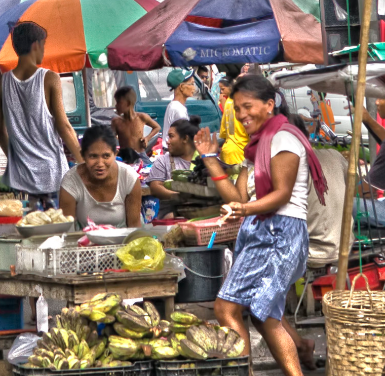

<!doctype html>
<html>
<head>
<meta charset="UTF-8">
<title>City of Smile</title>
	
	<!----------------------------Meta Viewport Tag------------------------------------>
	<meta name="viewport" content="width=device-width, initial-scale=1">
	
	<!-------------font awesome---------------->
	<link rel="stylesheet" href="https://cdnjs.cloudflare.com/ajax/libs/font-awesome/4.7.0/css/font-awesome.min.css">
	
	<!----------------------------Boostrap Libraries------------------------------------>
	<!-- Latest compiled and minified CSS -->
	<link rel="stylesheet" href="https://cdn.jsdelivr.net/npm/bootstrap@4.6.1/dist/css/bootstrap.min.css">
	
	<!----------------------------AOS Library------------------------------------>
	<link href="https://unpkg.com/aos@2.3.1/dist/aos.css" rel="stylesheet">
	
	<!----------------------------CSS Stylesheet------------------------------------>
	<link href="css/hometown_style.css" rel="stylesheet" type="text/css">
	
	
	<!-- jQuery library -->
	<script src="https://cdn.jsdelivr.net/npm/jquery@3.6.0/dist/jquery.slim.min.js"></script>

	<!-- Popper JS -->
	<script src="https://cdn.jsdelivr.net/npm/popper.js@1.16.1/dist/umd/popper.min.js"></script>

	<!-- Latest compiled JavaScript -->
	<script src="https://cdn.jsdelivr.net/npm/bootstrap@4.6.1/dist/js/bootstrap.bundle.min.js"></script>
	
	<!----------------------------AOS JS------------------------------------>
	<script src="https://unpkg.com/aos@2.3.1/dist/aos.js"></script>
	
</head>
</html>

<body>
	<!-------------HEADER NAV-------------->
	
	<!-------to wrap body content for footer-------->
	<div class="container_wrap"> <!---container wrap for footer to separate from body--->
		<div class="absolute-container d-flex flex-wrap justify-content-center align-items-center">
			<nav class="navbar navbar-expand-lg px-5 navbar-dark shadow-5-strong sticky-top">
				<a class="navbar-brand" href="index.html"> 
				
				</a>
				
				<!------------Toggler/collapsibe Button------------>
				<button class="navbar-toggler" type="button" data-toggle="collapse" data-target="#collapsibleNavbar">
				<span class="navbar-toggler-icon"></span>
				</button>
			
			
				<!-------------right side nav-------------->
				<div id="collapsibleNavbar" class="collapse navbar-collapse">
					<ul class="navbar-nav ml-auto">
						<li class="nav-item">
							<a class="nav-link text-white" href="history.html">History</a>
						</li>
						<li class="nav-item">
							<a class="nav-link text-white" href="people.html">People</a>
						</li>
						<li class="nav-item">
							<a class="nav-link text-white" href="economy.html">Economy</a>
						</li>
						<li class="nav-item">
							<a class="nav-link text-white" href="tourism.html">Tourism</a>
						</li>
						<li class="nav-item">
							<a class="nav-link text-white" href="references.html">References</a>
						</li>
					</ul>
				</div> <!---end navbar-collapse--->
			</nav> <!---end navbar--->
		</div> <!---absolute container--->
	
		
		
	<!---------------------------HERO BANNER------------------------------->
		<section id="heroPeople">
			<div class="container position-relative">
				<div class="row d-flex justify-content-center align-items-center text-center text-white">
					<div class="col-md-12">
						<div class="mt-5"> <!----to center align the content inside hero banner--->
							<div class="hero_subtext">
								<h4>BACOLODNON</h4>
								<br>
								<hr>
								<h1 class="display-1">people</h1>
								<br>
								<p>A subset of people from the Visayan region who speak Ilonggo are known as “Hiligaynons” or also known as "Ilonggos." However, it's interesting to see that the many Western Visayans have unique characteristics that enhance the beauty of their respective cultures.</p>
							</div> <!---end hero_subtext--->
						</div> <!---end my-auto--->
					</div> <!---end col--->
				</div> <!---end row--->
			</div> <!---end container--->
			
			
		<!---------------------------CONTENT OVERLAP------------------------------->
			<div class="container heroContent d-flex flex-wrap shadow">
				<div class="row text-center">
					<div class="col-md-6 text-left px-5 my-auto">
						<div class="heroDes">
							<p class="heroSubtext">BA•CO•LOD•NON</p>
							<h2>Bacolodnon</h2>
							<br>
							<p>Bacolodnons enjoy more relaxed lives compared to the big capital cities in the Philippines with little traffic congestion. And because this is a small city, everyone knows one another and sometimes surprisingly turns out to be related by tracing each other's family trees through their grandparents' stories. Similar to their cuisine, their manner of life continues to be heavily influenced by Spain. They value their personal time by taking siestas, or afternoon naps, and are devoted to their religious beliefs, and are family oriented.</p>
						</div><!---end herodes---->
					</div><!---end col---->
					<div class="col-md-6 heroImg"></div>
				</div><!---end row---->
			</div><!---end heroContent---->	
			
		</section> <!---end hero---->	
		<div class="push"></div>
		</div><!---end container wrap--->

	
	
		<!---------------------------ADDITIONAL INFORMATION------------------------------->
		<section id="peopleInfo">
			<div class="container">
				<div class="row">
					<div class="col-md-12 text-center">
						<p>Locals love good company, a nice setting, and a tasty dinner. They enjoy catching up with old acquaintances and keeping each updated, which makes it simple because everybody is well-connected. That’s why whenever you visit there you will notice several bars, restaurants, cafés, and al fresco dining scattered all over the place. Just like other urban cities, people here love to party, especially during a month-long celebration of the annual Masskara Festival where people get to enjoy street parties, live bands, and disco raves all over the city getting drunk and celebrate life and culture. And since people here almost know everyone, and if you party with them for a night you will surely build a connection and friendship with all the people that you will meet and that makes it a must-have experience for a tourist to try.</p>
					</div><!---end col---->
				</div><!---end row---->
			</div><!---end container---->
		</section><!---end peopleInfo---->
	
	
	
		<!-------------------------CAROUSEL---------------------------->	
		<div id="peopleCarousel" class="carousel slide" data-ride="carousel">

			<!-- Indicators -->
			<ul class="carousel-indicators">
				<li data-target="#peopleCarousel" data-slide-to="0" class="active"></li>
				<li data-target="#peopleCarousel" data-slide-to="1"></li>
				<li data-target="#peopleCarousel" data-slide-to="2"></li>
			</ul>

		<!-- The slideshow -->
		<div class="carousel-inner">
			<div class="carousel-item active">
				
				<div class="col-md-4 carousel-caption">
					<h2>Good Company</h2>
					<br>
					<p>Locals love good company, a nice setting, and a tasty dinner. They enjoy catching up with old acquaintances and keeping each updated, which makes it simple because everybody is well-connected. That’s why whenever you visit there you will notice several bars, restaurants, cafés, and al fresco dining scattered all over the place. Just like other urban cities, people here love to party, especially during a month-long celebration of the annual Masskara Festival where people get to enjoy street parties, live bands, and disco raves all over the city getting drunk and celebrate life and culture. And since people here almost know everyone, and if you party with them for a night you will surely build a connection and friendship with all the people that you will meet and that makes it a must-have experience for a tourist to try. </p>
				</div><!---end carousel-item---->
			</div><!---end carousel-inner---->
			
			<div class="carousel-item">
				
				<div class="col-md-4 carousel-caption">
					<h2>Art-driven Community</h2>
					<br>
					<p>This city is also an art-driven community, where artists openly express themselves and being recognized by the local community and art society within the center of Bacolod. The largest area devoted to art is the Art District in Bacolod City. This area, which covers a half-block, has bars, restaurants, and most significantly, art galleries with works created by regional artists who reside on the island of Negros occidental.
					<br>
					<br>
					The Orange Project building is the biggest and largest building in The Art District. A Collaboration between the artist Charlie Co and the businessman-artist Victor Benjamin Lopue III resulted in The Orange Project. The orange project seeks to improve Negros Island's appreciation of the arts. </p>
				</div><!---end carousel-item---->
			</div><!---end carousel-inner---->
			
			<div class="carousel-item">
				
				<div class="col-md-4 carousel-caption">
					<h2>Weekend Adventure</h2>
					<br>
					<p>Along with being hospitable and kind, Bacolod Local residents are renowned for their sweet demeanor and indescribably melodious voice and accent when conversing. They are known as the sweetest and loving people in the Philippines.
					<br>
					<br>
					People here are also obsessed over coffee and food; on the weekends you should always ready yourself for an adventure because at any time of the day someone will ask you “kape ta” or “kaon ta” and this invitation is either for a simple coffee or lunch out date, or a date that will possibly end up later in a bar, a trip to the beach or an exploration in mountain cafes. And since mountain cafes are only an hour's ride from the city, people tend to visit different mountain restaurants because of the aesthetic ambience and picturesque landscapes as an additional experience for a weekend well spent.</p>
				</div><!---end col---->
			</div><!---end carousel-item---->
		</div><!---end carousel-inner---->

			<!-- Left and right controls -->
			<a class="carousel-control-prev" href="#peopleCarousel" data-slide="prev">
				<span class="carousel-control-prev-icon"></span>
			</a>
			<a class="carousel-control-next" href="#peopleCarousel" data-slide="next">
				<span class="carousel-control-next-icon"></span>
			</a>
		</div><!---end peopleCarousel---->


		<!-------------------------GALLERY---------------------------->	
		<section id="peopleGal">
			<div class="container">
				
				<div class="row text-center">
					<!---first column--->
					<div data-aos="zoom-in" class="col-md-3 peepGal">
						
					</div>		
					<!---second column--->
					<div data-aos="zoom-in" class="col-md-3 peepGal">
						
					</div>			
					<!---third column--->
					<div data-aos="zoom-in" class="col-md-3 peepGal">
						
					</div>			
					<!---fourth column--->
					<div data-aos="zoom-in" class="col-md -3 peepGal">
						
					</div>
				</div><!--ends row-->

				<div data-aos="zoom-in" class="row text-center">
					<!---first column--->
					<div class="col-md-3 peepGal">
						
					</div>		
					<!---second column--->
					<div data-aos="zoom-in" class="col-md-3 peepGal">
						
					</div>			
					<!---third column--->
					<div data-aos="zoom-in" class="col-md-3 peepGal">
						
					</div>			
					<!---fourth column--->
					<div data-aos="zoom-in" class="col-md-3 peepGal">
						
					</div>
				</div><!--ends row-->

				<div class="row text-center">
					<!---first column--->
					<div data-aos="zoom-in" class="col-md-3 peepGal">
						
					</div>		
					<!---second column--->
					<div data-aos="zoom-in" class="col-md-3 peepGal">
						
					</div>			
					<!---third column--->
					<div data-aos="zoom-in" class="col-md-3 peepGal">
						
					</div>			
					<!---fourth column--->
					<div data-aos="zoom-in" class="col-md-3 peepGal">
						
					</div>
				</div><!--ends row-->
				
			</div><!--ends container-->	
		</section><!--ends peopleGal-->

		
	
		
		<!-------------------------FOOTER---------------------------->
		<section id="footer" class="mx-auto">
			<div class="container text-white mx-auto">
				
				<div class="row text-left">
					<div class="col-md-2 p-0"> <!---column 1--->
						<a class="nav-link text-white" href="index.html">HOMEPAGE</a>
						<a class="nav-link text-white" href="history.html">HISTORY</a>
					</div>
					<div class="col-md-2 p-0"> <!---column 2--->
						<a class="nav-link text-white" href="people.html">PEOPLE</a>
						<a class="nav-link text-white" href="economy.html">ECONOMY</a>
					</div>
					<div class="col-md-2 p-0"> <!---column 3--->
						<a class="nav-link text-white" href="tourism.html">TOURISM</a>
						<a class="nav-link text-white" href="references.html">REFERENCES</a>
					</div>
					<div class="col-md-2 px-2"> <!---column 4--->
						<a class="nav-link text-white" href="#">CONTACT US</a>
						<a class="nav-link text-white" href="mailto:mayoralbee@gmail.com">bacolod@gmail.com</a>
					</div>
					<div class="col-md-2 p-0"> <!---column 5--->
						<a class="nav-link text-white" href="#">(034) 434-9122</a>
						<a class="nav-link text-white" href="#">(034) 432-7196</a>
					</div>
					<div class="col-md-2 pt-3"> <!---column 6--->
						<a href="https://www.facebook.com/AlbeeBenitezPH" target="_blank"><i class="fa fa-facebook-square fa-2x"></i></a>
						<i class="fa fa-twitter-square fa-2x mx-3"></i>
						<i class="fa fa-envelope-square fa-2x"></i>
					</div>
					
				</div> <!---ends row--->
			</div><!---ends container--->
		</section> <!---ends footer--->
 
		
	<script>
  	AOS.init();
	</script>
</body>